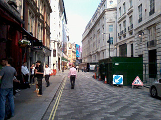
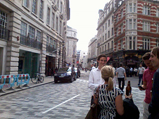
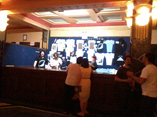
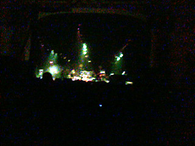
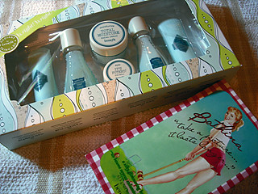
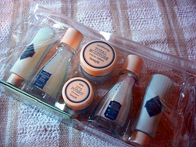

01.
비가 그치더니 갑자기 무진장 더워졌다
바로 여름날씨 ;ㅂ;
금요일날 그닥 바쁜일 없구 다들 덥고 늘어진상태
오후3시쯤 '차마실 사람~' 이래 물어보니께
(이게 사람들이 돌아가면서 한두시간 간격으로 물어보는데
일하면서 하루에 4잔~5잔은 마시는듯 ㅡㅡ;;
한국에서 나 커피/차 하루에 3~4잔 정도 마신다고 말하면 다들 좀 줄이라 하지만
여기서 일케 말하면 그게멀? 난 6잔도 마시는걸 이런분위기^^;;;;)
다들 지금은 뜨신 차보다 아이스커피가 필요해~
라고 말해서 일하기싫었겠다 나나나 내가 댕겨올게~라구 말하고
뛰쳐나갔다왔다 ㅋㅋㅋㅋ
스타벅스가니까 줄이 엄청났음
그래 다들 더운겨 ;ㅂ;
아이스라떼 마시믄서 오후 로동하구
브릭슨 아카데미로~
5번째보는 호러즈 공연 (공연후기는 요기)


이날 공연의 뽀인트는 패리스의 빵끗 웃는얼굴
이분이 이런 캐릭터가 아닌데 말이지 ㅋㅋㅋㅋㅋ


02.
5월30일부터 6월2일까지
30일 - gary numan 공연 (캠브릿지)
31일 - 캠브릿지에서 딩가딩가 여행
1일 - 결혼식참석
2일 - collect mania / 영화 프로메테우스 저녁표 예약완료
4일동안 gig - travel - wedding - geek(...;;) 이라는
정말 드문 조합의 포풍스케쥴 ㅋㅋㅋㅋㅋㅋㅋㅋㅋㅋㅋㅋㅋㅋㅋㅋ
그리고 collect mania가 열리는곳 바로 옆에 ikea가 있어서
이날 같이갈 M군에게 나 ikea들려도 돼? +_+ 라고 물어봤더랬다 케케케
(별로 살것도 없으면서 걍 구경하고 미트볼먹는게 목적인 인간^^;;)
전시회 private view라던가 wedding이
내가 유일하게 formal한 옷을 입는날이라
(물론 평소에도 입고싶으면 입지만 께을러서.......OTL)
내심 기쁘다능 +_+
또 팔랑귀 팔락거리믄서 베네핏가서
Take A Picture, It Lasts Longer! (뭔 이름이 이리 길어;;) 집어왔다
우찌되았든 초금이라도 사람다워보이고 싶은 발악이랄까^^;;;;;
그리고 skincare set은 귀여워서.........OTL
내가 요래 미니사이즈만 보면 정신을 못차린다;;
네일이나 색조는 다쓸자신도 없는거
이래 미니사이즈 많이 나왔으면 하는 바램이 있네^^;;;;
글엄 수요일 gig기다리믄서 다시 로동!! 힛힛